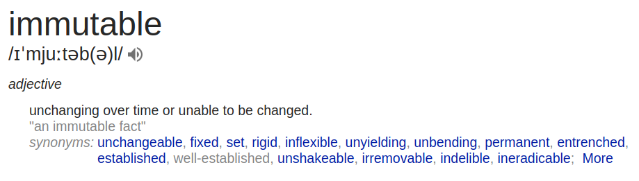
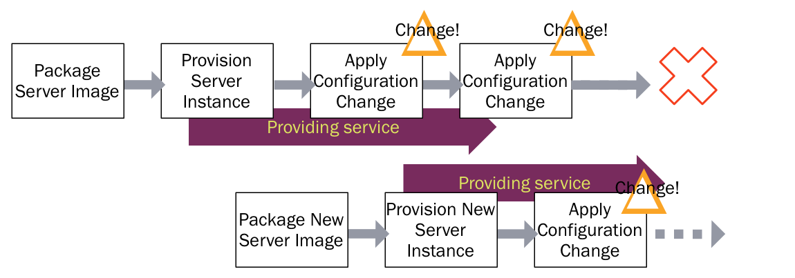
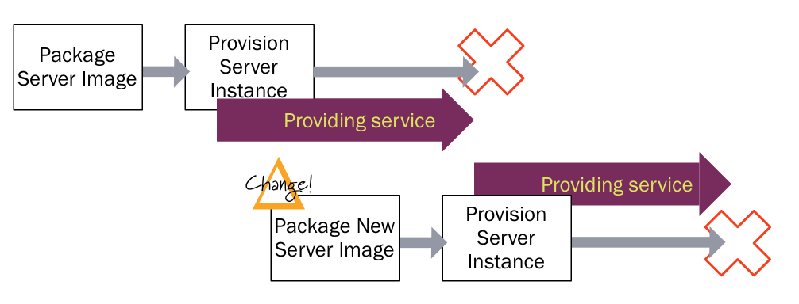
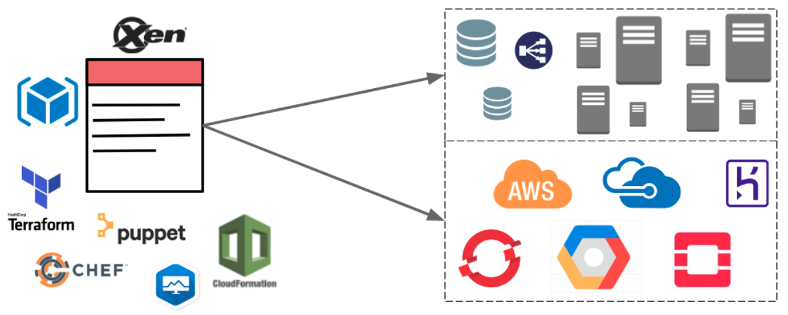
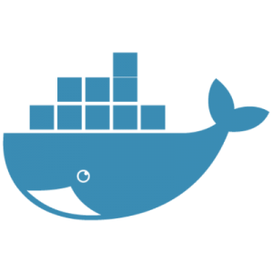
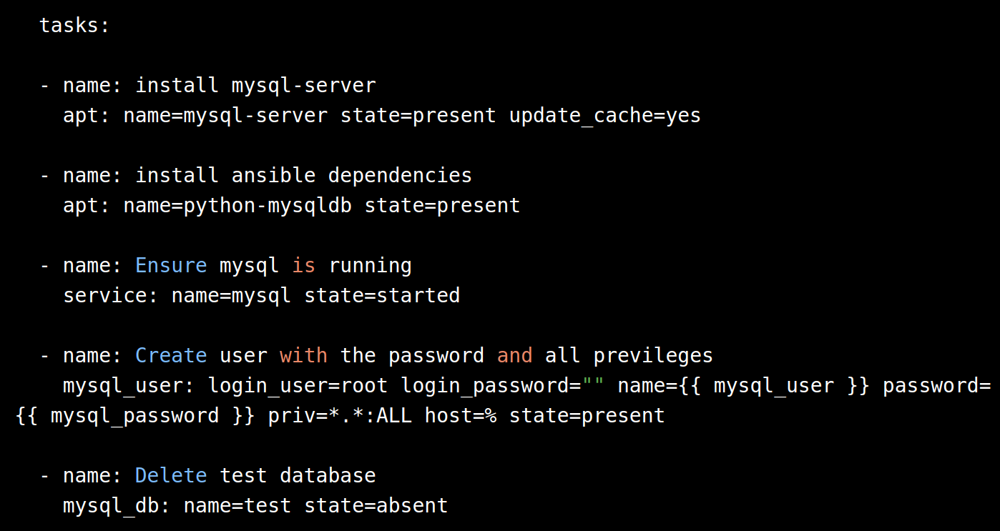
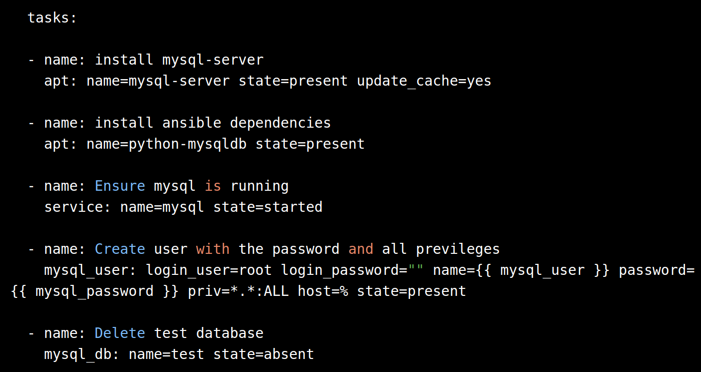

Infrastructura
“Every developer or support person dreads a moment like this when they have to reconfigure the servers, because of the different aspects involved in the seemingly tedious process. But it doesn't always have be to like this.”
Contenido
- Conceptos
- Infraestructura como Código
- Taller Práctico
Conceptos
Ganado vs Mascotas
| "You name them and when they get sick, you nurse them back to health" | "You number them, and when they get sick you shoot them and get another one." |
Ganado vs Mascotas
| Nombres como miservidor.querido.com | Nombres como servidor1520.dominio.com |
| Amorosamente creados a mano. Únicos e indispensables. | Iguales a cualquier otro servidor. Reemplazables. |
| Días/semanas en crearse. Puede requerir proyectos de migración para recrearse en otro lado | Se crean, modifican, destruyen y recrean en minutos a partir de scripts. |
Ganado vs Mascotas
| Se modifican sólo en ventanas de mantenimiento y por personas con privilegios especiales | Se modifican en cualquier momento mediante scripts que no requieren privilegios. |
Ganado vs Mascotas
| Varios requipos involucrados en aprovisionar un solo ambiente. | Un solo click cubre varios niveles (computación, redes, almancentamiento, otros) |
| Es estática, requiere excederse en la capacidad planeada para soportar picos | La infraestructura es elástica y escala de manera automática durante picos. |
Fénix vs. Copo de Nieve
| "The result is a unique snowflake: good for a ski resort, bad for a data center." | "A server should be like a phoenix, regularly rising out of the ashes." |
Servidores Copo de Nieve
- Son únicos: Han sido altamente modificados de su estado actual. Por esto su estado es difícil de reproducir
- Son fŕagiles: Cualquier cambio puede llevar a errores. Cualquier intento de arreglar esos errores lleva a más errores
- Son bellos: Hasta que debemos que cambiarlos nuevamente.
Servidores Fénix
Se consumen hasta las cenizas y reviven de ellas.
- Instanciados desde cero.
- Su instanciación está definida de forma automática siguiendo una "receta".
- No importa cuántas veces optemos por destruirlos, siempre podremos recrearlos.
- Los cambios de estos servidores se encuentran versionados.
Infraestructura Inmutable

La característica de ser inmutable aplica para objetos que una vez son creados no pueden ser modificados
Ciclo de Vida de Servidores Fénix

Destruir y recrear servidores constantemente nos llevan a un estado inicial conocido y versionado (pero no final)
Servidores Inmutables
“A server that once deployed, is never modified, merely replaced with a new updated instance”
Ciclo de Vida de Servidores Inmutables

¿Qué pasa si creamos servidores configurados una sola vez?
Servidores Inmutables
¿Ventajas?
- Mayor consistencia entre diferentes ambientes
- Procesos de aprovisionamiento más confiables
- Mayor velocidad en el aprovisionamiento de nuevos ambientes
- Procesos de evolución de servidores más rápidos y manejables
Infraestructura Inmutable
- ¿Podríamos/deberíamos tratar toda nuestra infraestructura como Inmutable?
- ¿Qué desventajas o consideraciones existen en este caso?
- ¿Qué pasa cuando tenemos datos no desechables en los servidores? (logs, bases de datos)
- ¿En qué medida se ven afectados los tiempos de despliegue si todo debe ser recreado cuando existen cambios?
Chaos Engineering
"a tool that randomly disables our production instances to make sure we can survive this common type of failure without any customer impact"
"...it has terminated over 65,000 instances running in our production and testing environments. Most of the time nobody notices, but we continue to find surprises caused by Chaos Monkey which allows us to isolate and resolve them so they don't happen again."
Infraestructura Como Código
Infraestructura Como Código
Infraestructura Como Código

Infraestructura Como Código
- Infraestructura programable.
- No implica solamente usar scripts que nos permitan repetir pasos en aprovisionamiento y despliegue.
- Software especializado y prácticas de desarrollo que se usan en aplicación
- Versionamiento
- Pruebas
- Despliegues pequeños
- Patrones de diseño
Herramientas



 

Taller Práctico
Objetivo
En este laboratorio vamos a instanciar una arquitectura en nube (AWS) mediante un script en terraform
Infraestructura Codificada
Algunas actividades que realizaremos:
- Instalar Terraform
- Introducción a Terraform
- Tutorial Construcción
- Identificar los archivos y directorios principales del proyecto
- Análisis del código del proyecto
- ¿Qué función tienen?
- ¿Es posible definir parámetros?
- ¿Qué es un módulo?
- ¿Encuentra en el proyecto algo imilar a lo que usamos usualmente en un proyecto de software?
- Instalar Azure Cli
- Estudiar lo que necesitaríamos para recrear una infraestructura similar en azure: ejemplo